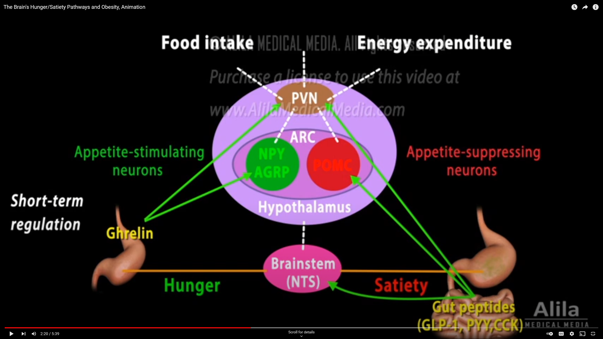
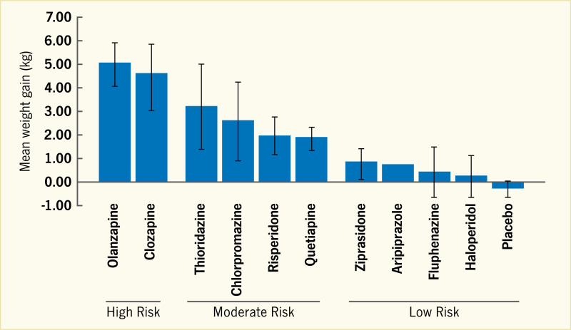
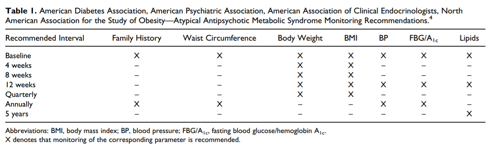

27 대사증후군
27.1 대사증후군의 개념
현대 사회에 접어들수록, 특히 선진국을 중심으로 심혈관 질환과 2형 당뇨병의 유병률이 부쩍 증가했으며, 이 환자들은 대체로 비만하다는 공통점이 있다. 1988년 Reaven1은 이러한 상태가 인슐린 저항성에서 비롯된다고 보고, 흔히 한데 모여 나타나는 증상들을 모아 “Syndrome X”라고 칭하였다.[1] 그가 제시한 Syndrome X 혹은 “인슐린 저항성 증후군(insulin resistance syndrome)”이란 용어는 병태생리를 강조하는 용어였지만, 의사들은 쉽고, 신뢰도가 높은 진단기준을 원하였다. 원래 “대사증후군( metabolic syndrome)”은 1977년 독일의 의학자인 Haller에 의해 도입된 용어이다.[2] 그는 동맥경화의 위험요소를 찾던 중 비만, 당뇨, 이상지질혈증, 요산 증가, 지방간이 한 환자에서 동시에 발견되는 경우가 제법 많다는 것에 주목하고, 이러한 증상들을 한데 묶어 대사증후군이라 불렀다. 즉 대사증후군이란 심혈관 질환의 위험을 높이는 특정한 증상들의 집합을 가리키는 개념이었던 반면, Syndrome X란 대사증후군의 주요한 원인 중 하나(인슐린 저항성)를 지목한 개념인 셈이다.
1 Gerald Reaven (1928~2018): 미국의 내분비의사로 스탠포드 대학 교수로 재직하였다. 1988년 미국 당뇨병 학회에서 주관한 Banting Lecture에서, 인슐린 저항성과 이로 인한 당 내성 저하가 비만/당뇨/고혈압의 원인이라는 이론을 발표하였다. 당시만 해도 2형 당뇨의 원인이 췌장의 인슐린 분비세포 손상으로 말미암은 인슐린 농도 저하때문이라고 믿어졌기 때문에 그의 이론은 격렬한 저항에 부딪혔고, 정설로 받아들여지기까지는 꽤 오랜 시간이 걸렸다.
내분비 의사들에 의해 비슷비슷하면서도 혼동스러운 개념들이 잇달아 제안되자, 1999년 WHO는 유사한 개념들을 통합하여 “대사증후군”이라는 용어로 통일하고 잠정적인 정의를 내린다. 이에 따르면 1) 당내성 이상/당뇨/인슐린 저항성 중 하나가 존재하면서, 2) 고혈압, 이상지질혈증, 중심부 비만2, 알부민뇨증 중 두 가지 이상이 해당되면 대사증후군이라 진단한다. 그러나 WHO 진단기준에 만족하지 못한 전세계의 다양한 학회들은 이 기준을 확장, 보완하여왔고, 현재는 수십개 이상의 진단기준이 혼란스럽게 사용되고 있다.[3]
2 중심부 비만 (central obesity): 복부비만(abdominal obesity) 혹은 내장비만(visceral obesity)이라고도 불리운다. 아랫배를 중심으로 지나치게 지방이 축적되는 것으로, 복막을 중심으로 외부(피하 지방)와 내부(내장 지방)에 지방이 쌓인다. 이는 엉덩이와 허벅지에 지방이 축적되는 말초비만(peripheral obesity)과 대조되는 개념으로, 특히 중심부 비만은 심혈관계 질환의 위험을 높인다.
대사증후군에 대한 의학자들의 반응은 양면적이다. 공중보건의 개선과 개인의 건강 수준 향상을 위해서 무척 중요한 개념이라는 것을 인정하지만, 진단적 가치에 대해서는 의문을 표한다. 전문가들은 대사증후군이 보건 계몽을 위한 교육적 개념일뿐, 그 자체가 독립된 진단 혹은 질병이라고 보기는 어렵다고 여긴다. 게다가 정의와 진단기준조차 합의가 이루어지지 않기 때문에 역학 조사에 사용하기도 어렵다고 본다.[4,5]
이처럼 논란이 많은 개념이긴 하지만, 조현병은 물론 주요 정신질환 환자에 있어서 대사증후군 위험은 무척이나 강조되고 있다.[6] 특히 조현병은 질환 자체가 대사증후군의 위험요인일 뿐 아니라[7,8], 장기적인 항정신병 약물의 복용은 위험을 더욱 가중시킨다.[9] 특히 일부 비정형 약물을 복용하면 환자들은 빠르면 수일내지 수주내에 뚜렷한 체중 증가를 경험하며, 이내 당내성 이상 및 이상지질혈증이 뒤따른다. 특히 체중 문제는 치료 초기부터 시작하여 수년동안 지속될 수 있으며, 자존감 저하와 사회적 낙인은 물론이거니와, 대사 이상, 심혈관 질환, 골관절염, 수면 무호흡증, 담석증, 다낭성 난소증후군 등 비만과 관련된 다양한 신체적 문제를 일으킨다. 이는 궁극적으로 치료에 대해 거부감으로 이어진다.[10]
27.1.1 대사증후군의 역학
대사증후군의 기준으로 가장 보편적으로 사용되는 것은 2005년 미국 국립 콜레스테롤 교육 프로그램(NCEP)에서 발표한 기준 이다.(표 __)3 나열된 5가지 기준 중 3가지 이상을 만족하면 대사증후군으로 진단한다.
3 미국의 National Cholesterol Education Program (NCEP) Adult Treatment Panel III (ATP III)는 2001년에 대사증후군 진단기준을 발표한다. 2005년에 American Heart Association과 National Heart Lung and Blood Institute는 NCEP 기준을 보완하여 새로운 기준을 내놓는데, 이를 AHA/NHLBI 기준이라고도 한다. 같은 해인 2005년에 세계 당뇨병 협회(International Diabetes Foundation, IDF)는 또 다른 진단 기준을 내놓는데, AHA/NHLBI와 IDF 기준의 차이는 후자는 비만을 필수 기준으로 넣어놓았다는데 있다. 2009년에는 두 기관이 조율하여 새로운 기준을 내놓는데, 실상 AHA/NHLBI 기준과 달라진 것이 없다.[11]
표31. 성인 대사증후군의 정리 (5개의 위험요인들 중 3개이상이면 대사증후군에 해당) [12]
| 항목 | 남성 | 여성 | 비고 |
|---|---|---|---|
| 허리둘레 | ≥90cm | ≥85cm | *한국기준/국가별로 상이할 수 있음 |
| 중성지방 | ≥150 mg/dL | ||
| HDL 콜레스테롤 | ≤40 mg/dL | ≤50 mg/dL | |
| 혈압 | 수축기 혈압 ≥130 mm Hg이완기 혈압 ≥85 mm Hg | ||
| 공복혈당 | ≥100 mg/dl 또는 당뇨병 과거력, 또는 약물복용 |
조현병 환자의 대사증후군 유병률은 인구학적 특성, 복용 약물의 종류 등에 따라 격차가 크기 때문에 믿을만한 추정치를 얻기 어렵다. 예를 들어 비교적 젊은 인도 환자를 대상으로 한 연구에서는 유병률이 3.9%에 지나지 않았던 반면[13], 뉴질랜드에서 행해진 연구에서는 68%로 보고되었다.[14] 이렇듯 인구집단에 따라서도 달라지지만, 적용하는 진단기준에 따라서도 달라질 수 있다. 동일한 모집단에서도 NCEP 기준을 사용했을 때보다 IDF 기준을 적용하였을 때 유병률이 높게 나온다.[15] 한국에서 집계된 바에 의하면, NCEP 기준을 적용했을 때 조현병과 조현정동장애 환자 845명 중 36.5%에서 대사증후군이 진단되었고, 이중 클로자핀 군이 44.7%로 가장 높았다.[16]
유병률이 아닌 발병률(incidence)을 조사한 연구는 더욱 드물다. 약물 복용 기왕력이 없는 30명의 여성을 대상으로 6주간 항정신병 약물을 투여했을 때, 약물 투여 전과 후의 대사증후군 빈도는 각각 3.33%와 31.81%였다. 이는 항정신병 약물 투여 후 얼마나 빠르게 대사증후군이 발생할 수 있는지를 보여주는 드문 연구이다.[17] 유지치료 중인 환자라 하더라도, 대사증후군이 항상 고정되어 있는 것이 아니라, 일부는 새로 생기기도 하고 일부는 저절로 회복되기도 한다. 한국에서 비정형 약물을 투여받고 있는 만성 환자를 대상으로 조사한 바에 다르면, 1년 동안 새로 발생하는 비율은 29.6% 였는데 비해, 저절로 회복되는 비율은 26.4%였다.[18]
27.1.2 위험 인자
수많은 역학 조사에서도 불구하고 약물에 의한 대사증후군 발생을 예측할 수 있는 지표는 명확하게 밝혀지지 않았다.[19] 학자들이 언급하는 위험 요인 혹은 예측 인자는 기껏해야 성별, 나이, 유병기간, 약물의 종류, 약물 투여기간, 기저 BMI4 수치, 유전적 요인 정도이다.[20] 대부분의 연구에서 여성에서 대사증후군의 유병률이 높은 것으로 보고하였다.[21] 그러나 각 요소별로 나누면 남성이라고 위험이 낮은 것은 아니다. 예를 들어 체중, 허리둘레, 지질대사지표 등은 여성에서 변화가 컸지만, 혈압 변화와 혈당 상승은 오히려 남성에서 두드러졌다.[19,22]
4 Basal mass index (BMI): weight(kg)/height(m)2로 계산한다.
연령이 높아질수록 대사증후군의 유병률은 뚜렷이 높아진다. 그러나 연령은 항정신병 약물 노출 기간 혹은 질병의 만성화 정도와 관계되기 때문에, 어느 변인이 더 근본 원인인지는 확실하지 않다.[23] 그보다는 정상대조군과의 차이가 연령이 높을수록 더 희미해진다는 것이 흥미롭다. 나이가 들면 정상인에서도 대사증후군의 유병률이 급격히 높아지기 때문에, 약물투여군과의 차이가 점점 줄어든다. 대신 젊은 환자군에서는 차이가 확연하다. 그 밖의 위험인자로는 운동량 및 활동성, 흡연과 음주, 식습관 등 생활습관과 관련된 것들이 있다.
우리나라에서는 큰 문제가 되지 않지만, 다인종 국가에서는 인종간의 차이가 생각보다 크다. 흑인과 동남아시아인, 라틴 민족은 백인보다 위험이 높다. 물론 이들은 문화적으로 식습관, 이상적인 체형, 허용되는 체중범위 등이 다르기때문에, 서유럽 백인을 기준으로 만들어진 진단기준을 그대로 적용하는 것은 적절하지 않다. 그러나 이들의 평균수명이 짧고, 중년기 이후 건강상태가 대체로 나쁜 것을 감안할 때, 유전적 영향이 있을 가능성을 배제할 수 없다.[24–26]
대사증후군 혹은 대사증후군을 구성하는 각 요소에 해당되는 유전적 위험변이를 찾는 것은 인기있는 연구주제였고 실제로 광범위 유전체 연합연구를 통해 수십개 이상의 변이가 발견되었다.[20] 발견된 변이들은 정상대조군에서 대사증후군 위험을 높이는 변이와 크게 다르지 않았다. 지금까지의 연구를 통해 MTHFR5 유전자 변이와 α1 자가수용체 유전자 (ADRA1A) 변이가 조현병 환자에서 대사증후군의 위험을 높이는 것이 발견되었다. 5-HT2C 유전자(HTR2C), 카나비노이드 수용체 유전자(CNR1) 변이 역시 관련이 있다고 여겨진다.[29–31]
한편 약물에 노출되지 않은 조현병 환자에서도 이미 공복혈당의 상승이나 인슐린 저항성이 빈번하게 발견되며, 코티졸 농도도 높아져있다.[32–34] 이는 조현병의 병태생리가 호르몬 및 면역 조절 경로에 이상을 가져오며, HPA 축을 교란시키고 있음을 시사한다. 혹은 조현병의 유전적 위험변이와 대사증후군의 위험변이 사이에 겹치는 부분이 있을 가능성도 있다.[35,36]
27.2 항정신병 약물의 영향
27.2.1 체중 증가
아무리 조현병의 유전적 요인 및 비활동적인 생활습관이 대사증후군의 위험을 높인다고 해도, 항정신병 약물의 영향을 능가할 수는 없다. 약물을 사용하고 안하고에 따라 유병률에 큰 차이가 나며, 약물에 따라서도 그 위험 정도가 분명히 다르다. 화학구조가 유사한 클로자핀과 올란자핀은 다른 어떤 약물보다다 대사증후군 위험이 높아, 주요 심혈관계 질환의 유병률을 3배 가까이 높일 정도이다.[37] 이에 비해 아리피프라졸, 지프라시돈, 아미설프라이드와 같은 약물은 현저히 위험이 낮으며, 새롭게 개발된 세로토닌-도파민 길항제들 역시 심혈관계 질환의 위험이 낮다.[19] 클로자핀, 올란자핀이라는 두 약물 때문에 비정형 약물 전체가 대사증후군 위험이 높다는 오명을 얻게 되었지만, 사실은 정형 약물 시대에도 상황은 비슷하였다. 2011년에 행해진 METEOR6 연구에서는, 대사증후군을 구성하는 각 요소의 유병률이 정형 약물과 비정형 약물 사용군에서 크게 다르지 않다는 결론이 얻어졌다.[38]
6 Evaluation of METabolic disordErs in schizOphRenic patients (METEOR) study
대사증후군을 이루는 각 요소 중에서도 가장 약물의 영향이 두드러진 것은 체중 증가이다. 다행히 약물을 투여한 처음 몇 달 동안 급격하게 체중이 증가한 후, 조금씩 안정화되어 더 이상은 크게 증가하지 않는다. 안정화에 이르기까지 걸리는 시간은 약물에 따라 다른데, 올란자핀의 경우 4~9개월 정도이지만 클로자핀은 수년이 걸릴 수도 있다.[39] 물론 체중이라는 것이 줄었다 쪘다하는 것이지만, 평균적으로 증가된 체중이 새로운 기준점이 되어 약물을 끊더라도 체중이 원래대로 돌아가지는 않는다.[40] 체중 증가의 위험 요인으로는 여성, 낮은 연령, 초발 환자, 기저 BMI가 낮은 환자 등이며, 약물 투여 후 첫 한달 동안의 식욕 및 체중 변화가 이후 경과를 예측하는 중요한 변인이다.[41]
정리하면 조현병 환자들은 약물을 사용하기 전부터 이미 대사증후군의 유전적 위험인자를 갖고 있으며, 조금씩 대사증후군의 증상을 보이기 시작하고 있다. 하지만 항정신병 약물을 이 상황을 더욱 악화시키며, 그 정도는 정형/비정형 구분에 의한 차이보다는, 각 약물의 개별적 특성으로 보여진다. 게다가 약물에 의한 진정, 음성증상 등은 환자들로 하여금 비활동적이고 건강하지 못한 생활습관을 취하게 만들어 체중 증가를 유도한다. 따라서 환자들은 대사증후군과 관련하여 삼중고(유전적 요인 + 약물 영향 + 나쁜 생활습관)를 겪고 있다고 보아야 한다.
27.2.1.1 정상 식욕 및 식이 조절 기전
식이 조절은 시상하부의 궁상핵7을 중심으로 한 정교한 체계에 의해 이루어진다. 시상하부의 궁상핵에는 NPY, AgRP8를 분비하는 핵과 대조적으로 POMC9를 분비하는 핵이 있으며, 전자를 자극하면 섭식 행동이 증가되고 후자를 자극하면 감소한다. 궁상핵은 뇌간의 NTS10로부터 입력되는 신호를 받으며, 같은 시상하부에 위치했지만 좀더 상부에 자리잡은 PVN11으로 신호를 보낸다.
7 궁상핵 (arcuate nucleus, ARC): 시상하부의 바닥쪽 안쪽(mediobasal)에 위치한 핵으로 여기서 분비되는 neuropeptide Y (NPY)와 Agouti-related peptide (AgRP)는 식욕 증진에 관여하고, α-melanocyte-stimulating hormone (α-MSH)는 반대 작용을 한다.
8 Neuropeptide Y (NPY), Agouti-related peptide (AgRP): 시상하부의 궁상핵에서는 NPY/AgRP 분비세포가 있으며, leptic에 의해 분비가 억제되고 ghrelin에 의해 증가된다. NPY와 AgRP는 대체로 식욕을 증가시키고, 에너지 소모를 감소시킨다. 이들은 아마도 melanocortin 수용체에 작용함으로써 효과를 발휘하는 것으로 여겨진다
9 Proopiomelanocortin (POMC): 중추 melanocortin 체계를 이루는 호르몬 중 하나이다. 주로 식이와 에너지 소모를 조절한다. 궁상핵에 위치한 POMC 뉴런의 아세틸콜린 수용체를 자극하면 식욕이 감소하는데, 이는 니코틴이 식욕을 줄이는 기전이기도 하다.
10 Nucleus tractus solitarius (NTS): 뇌간에 위치하며, 미주 신경을 통해 위장에 위치한 신경총(nervous plexus)으로부터 영양분 흡수 상태에 대한 신호를 받는다.
11 araventricular nucleus (PVN): 시상하부에 위치한 핵 중 하나로, 제 3뇌실에 연접해있다. PVN에서 시작된 뉴런은 뇌하수체로 연접되며, 옥시토신과 CRH(corticotropin-releasing hormone), TRH(thyrotropin-releasing hormone)를 분비한다. PVN은 신체의 삼투질 농도, 식욕, 스트레스 반응 등을 조절한다.
식이 조절은 단기적 조절과 장기적 조절로 나눌 수 있다. 단기적으로는 주로 위 점막의 팽창정도와 장으로부터 분비되는 펩타이드(gut peptide)에 의해 조절된다. 허기가 져서 위의 팽창도가 떨어지면, 위 점막에서 분비되는 ghrelin12이 PVN 및 NPY,AgRP 뉴런을 자극하기 때문에 섭식행동이 늘어난다. 반대로 식사 후 위 점막이 팽창되거나 장에서 GLP-113, PYY14, CCK15가 분비되면, ghrelin 분비가 멈추게 되고, 공복감이 사라지면서 섭식행동도 줄어든다.(그림 ___)
12 Ghrelin: 위의 상부에 위치한 위바닥(fundus, 식도와 위몸통을 연결하는 부위)에서 분비되며, 배고픔 호르몬(hunger hormone)이라고도 불린다.
13 Glucagon-like peptide-1 (GLP-1): 음식이 흡수되면 장점막과 NTS에서 분비되며, 췌장에서 인슐린이 분비되는 것을 자극한다. 또한 위점막에 직접 자극하여 위산 분비와 운동성을 줄이는 등 식욕을 감소시킨다.
14 Peptide YY (PYY): 음식이 흡수되면 소장과 대장의 점막에서 분비되는 호르몬으로 NPY 수용체에 결합하여 식욕을 줄이는 역할을 한다.
15 Cholecystokinin (CCK): 음식이 흡수되면 십이지장에서 분비되는 호르몬으로 소화 효소와 담즙이 분비되도록 자극하며, 공복감을 감소시킨다.

장기적으로는 지방 세포에 저장된 체내 지방의 양에 따라 조절된다. 지방의 축적정도에 비례하여 인슐린과 leptin16 분비가 증가되며, 두 호르몬은 함께 시상하부에 작용하여 식이 섭취를 줄이고, 에너지 소모를 촉진한다. 그러나 장기적으로 고칼로리 식사를 하여 leptin 분비가 늘어난 상태가 지속되면, 쉽게 leptin 저항성이 유발되어 충분히 축적된 체내 지방에도 불구하고 섭식행동을 멈추지 않는다.
16 Leptin: 지방세포와 소장에서 분비되며, 배고픔을 감소시키고 섭식행동을 줄인다. 또한 대사 효율을 높여 체내 지방량을 줄인다. 적당량의 leptin 분비는 체중 유지에 도움이 되지만, 장기간 leptin 분비가 증가되면 leptin 수용체 하부에 위치한 JAK/STAT 신호전달계가 기능을 하지 못하고, leptin의 뇌-혈관 장벽 투과성이 줄어들면서 leptin 저항성이 생기게 된다.
27.2.1.2 항정신병 약물이 식욕 및 식이에 미치는 영향
의사와 환자 사이에는 항정신병 약물 복용 후 살이 찌는 것이, 식욕증가와 무너진 식습관 때문인지 아닌지에 대해 격론이 벌어진다. 환자들은 많이 안 먹는데도 살이 찐다고 주장하며, 의사들은 약물이 식욕을 증가시키니 식습관을 교정해야만 한다고 강조한다. 이러한 논란은 아직 분명한 답을 얻지 못하고 있다. 약물이 식욕 및 식이에 큰 영향을 미치는 것도 맞지만, 식이습관과 관련없이 대사 경로 자체를 바꾸는 것도 맞는 것 같다.
일반적으로 항정신병 약물에 의한 체중증가는 H1 수용체 차단효과 탓으로 돌려진다. 이를 뒷받침하듯 항히스타민제는 항정신병 약물이 아님에도 불구하고 식욕을 촉진하고 체중을 증가시킨다. 히스타민 신경세포는 시상하부 뒤편에 위치하며, 선조체를 통해 뇌 전역에 연접한다. 본래 leptin은 쉽게 저항성에 빠지기 때문에, 다른 기전이 개입하지 않는 한 leptin 신호는 오래 지속되지 못하는데, 흥미롭게도 히스타민은 leptin 저항성이 생기는 것을 방해한다. 예를들어 H1 수용체가 knock-out된 쥐는 처음부터 leptin 저항성을 보이기 때문에 leptin이 식이억제 효과를 전혀 발휘하지 못한다.[42] 반대로 뇌실에 히스타민을 직접 주사하면 식이섭취가 극적으로 줄어든다.[43] 항정신병 약물은 단순히 H1 수용체를 차단할 뿐 아니라, 궁상핵과 VMH17에서 H1 수용체의 발현량 자체를 줄인다.[44] 이렇게 되면 leptin의 기능이 마비되는 것이나 마찬가지이다.
17 Ventromedial nucleus of the hypothalamus (VMH): 시상하부의 배쪽 안쪽에 위치한 핵으로 포만감, 공포, 성욕, 체온 조절등을 담당하고 있다. VMH에 인위적으로 손상을 입히면, 식이섭취가 늘어나고 체중이 증가한다. 이 때문에 포만감 중추(satiety center)라고도 불리운다.
이외에도 항정신병 약물이 음식에 대한 갈망이나 식이섭취에 영향을 미치는 경로는 다양하다. 올란자핀과 리스페리돈은 NPY와 AgRP 분비량을 증가시킨다.[45] 올란자핀은 ghrelin 신호전달을 활성화시킨기도 한다.[46] POMC, β-endorphin, α-melanocyte-stimulating hormone (α-MSH), adrenocorticotropic hormone (ACTH) 등과 같은 식욕증진 호르몬들 역시 항정신병 약물 투여 후 분비가 증가된다.[47] 올란자핀은 5-HT2C 수용체를 차단하는데, 5-HT2C는 원래 POMC 신경세포를 자극하여 식욕을 줄이기 때문에 이를 차단하는 것은 체중 증가로 이어진다.
환자들은 단순히 식욕이 증가되었다기 보다는 항상 속이 허전하고, 음식에 대한 생각과 갈망이 늘어나며, 한번 먹기 시작하면 정신을 차리지 못한다고 보고한다. 이는 폭식장애18나 야식증후군19 등이 유발되는 것은 아닌지 의심스럽게 만든다.[49,50] 음식에 대한 갈망은 특정한 종류의 음식(주로 고탄수화물, 고지방 음식)을 먹고 싶은 강한 충동이나 욕망과 함께 이러한 충동에 저항하기 어려워하는 것으로 정의된다. 이러한 현상은 단순히 궁상핵을 중심으로 한 공복감/포만감 조절기전만으로는 설명되지 않으며, 그보다 상위에 있는 보상 회로의 영향을 받는다고 보아야 한다. 항정신병 약물은 보상회로의 도파민 신호전달을 혼란시키기 때문에 폭식을 유발할 수 있다. 설탕, 지방, 소금, 조미료 등은 도파민을 급격히 올릴 수 있다.[51] 마치 조현병 환자들이 니코틴에 탐닉하여 인지기능 저하를 보상하려 하듯이, 약물 투여 후 감소된 도파민을 폭식을 통해 보상하고 있는 지도 모른다.
18 폭식장애 (binge eating disorder): 간헐적으로 빈번하게 폭식을 하는 것으로, 토하거나 체중에 집착하지 않는 면이 폭식증(bulimia nervosa)과 차이가 난다.
19 야식증후군 (night eating syndrome): 저녁 식사 이후에 반복적으로 상당한 양의 음식을 먹게 되는 상태로, 자다가 깨서 먹거나, 자기 전에 먹는 경우를 모두 포함한다. 환자들은 폭식에 대해 어렴풋이 기억하며 이를 수치스럽게 여기고 어떻게든 숨기려 한다. 1955년 Stunkard 등[48]에 의해 처음 기술되었으며, DSM-5에도 잠정적인 진단기준이 등재되어 있다.
클로자핀과 올란자핀은 음식에 대한 갈망 및 폭식행동을 유발할 수 있는 대표적인 약물이다.[52] Kluge 등[53]이 임상시험 자료를 분석한 바에 따르면, 클로자핀과 올란자핀 복용 환자 중 음식에 대한 갈망을 느낀 환자의 비율은 각각 48.9%와 23.3%였으며, 실제 폭식을 경험한 환자는 16.7%와 8.9%였다. 약물을 투여한지 일주일이 지나면 벌써 음식에 대한 갈망이 시작되었으며, 이내 폭식으로 이어졌다.
27.2.1.3 항정신병 약물이 에너지 대사에 미치는 영향
식욕 및 음식에 대한 갈망에 변화를 일으키는 말고도, 에너지 소모나 대사 경로 자체를 변화시키면 체중에 영향을 미칠 수 있다. 무엇보다도 진정 작용이 강한 항정신병 약물은 활동량을 줄이기 때문에 소모되는 칼로리가 적어진다. 동물실험에서도 올란자핀을 투여한 쥐는 활동성이 현저히 저하되며, 이는 식욕을 증가시키지 않을 정도의 낮은 약물 용량에서도 차이가 드러난다.[54,55] 가만히 있는 안정상태에서도 에너지 소모량20에 차이가 나는지는 확실하지 않다. 한가지 단서는 환자의 체온에서 찾을 수 있다. 안정상태 에너지 소모량의 상당 부분은 열발생(thermogenesis)이다. 애초에 Laborit가 클로르프로마진에 주목한 이유는 체온을 낮춰 인공적 동면상태를 유도하기 때문이었다.[56,57] 클로르프로마진 이외에도 올란자핀, 할로페리돌, 리스페리돈 등은 간혹 저체온증을 일으킬 때가 있다.[57] 이와같이 체온을 낮추는 효과는 에너지 소모를 확연히 줄이는 결과를 낳는다.[58] 하지만 이러한 영향이 체중 증가에 얼마나 기여하는지는 의문이다.
20 안정상태에서의 에너지 소모량을 resting energy expenditure (REE)라고 한다.
한편 에너지 대사와 관련된 말초 조직, 특히 위장관계와 지방세포에는 도파민, 세로토닌 등 다양한 신경전달물질 수용체가 발현되며, 이러한 수용체들은 항정신병 약물의 영향을 받는다. 이들 수용체는 국소적인 조절을 위한 것이기도 하지만, 중추신경계와 말초조직 간의 활발한 상호소통(crosstalk)을 위해서이기도 하다.[59] 예를 들어 인슐린을 분비하는 β 세포21에는 D2,3 수용체가 발현되며, 위장관에는 광범위하게 5-HT2A 수용체가 분포되어 있다. D2,3 수용체가 자극되면 인슐린 분비가 줄어들며, β 세포의 증식 억제와 함께 세포자멸사가 유도된다.[60] 따라서 D2,3를 차단하는 항정신병 약물을 투여하면 인슐린 분비가 상당히 늘어나는데[61], 이는 당장은 혈당을 낮추지만 만성적인 고인슐린 혈증으로 말미암아 인슐린 저항성을 유발하게 된다.[62]
21 β 세포: 췌장의 Langerhans 섬(Langerhans islet)에 분포하며, 인슐린과 amylin을 분비한다.
27.2.1.4 약물에 따른 차이

모든 항정신병 약물은 체중을 증가시킬 위험이 있지만, 약물마다의 차이도 매우 심한 편이다. 약물에 따른 차이는 대체로 H1 수용체 친화도에 의해 결정되지만, 꼭 그렇지 않은 경우도 있다. 평균 수치를 모아보면 그림__와 같이 정리해볼 수 있다. 클로자핀과 올란자핀은 체중 증가의 위험이 가장 높으며, 리스페리돈, 팔리페리돈, 퀘티아핀 등이 중간 정도이다. 반면 보다 최근에 도입된 약물들 즉, 아리피프라졸, 브렉스피프라졸, 카리프라진, 루라시돈, 지프라시돈과 같은 약물은 위험이 가장 낮다. 그러나 이러한 약물 사이의 비교는 평균치를 사용하기 때문에, 환자 개개인의 사례에 반드시 들어맞는다는 보장은 없다. 예를 들어 비교적 체중에 중립적이라고 평가되는 루라시돈의 경우, 1년 동안 투여했을 때 평균적으로는 0.4kg 감소한 것으로 나타났지만, 환자들 중 16%는 여전히 유의미한 체중 증가22를 경험하였다.(26196189)
22 보통 기저 체중의 7%이상 증가한 경우를 말한다.
항정신병 약물의 용량에 따라 체중 증가의 폭이 달라지리라고 보는 것이 맞지만, 이 역시 약물에 따라 차이가 크다. 예를 들어 리스페리돈과 팔리페리돈은 용량이 증가한다고 해서 체중 증가의 위험이 따라서 커지지 않지만, 올란자핀은 용량-위험이 거의 정비례한다.[64] 이러한 차이는, 약물에 따라 체중 증가를 일으키는 기전이 조금씩 다를 수 있다는 것을 시사한다.
27.2.2 인슐린 저항성
27.2.2.1 인슐린 저항성의 개념
대사증후군을 구성하는 각 구성요소들은 인슐린 저항성을 공통된 병태생리로 가지고 있기 때문에, 어떤 의미에서는 항정신병 약물의 체중에 대한 효과보다 인슐린 저항성에 대한 효과가 더욱 중요할 수 있다. 대다수 의사들은 체중 증가가 지속되면 결국 인슐린 저항성을 가져온다고 생각하고 있지만, 체중 증가를 거치지 않는 경우도 있기 때문에 주의를 요한다.
혈당이 증가되면 췌장의 β 세포에서 인슐린이 분비되며, 인슐린은 간을 비롯하여 근육과 지방세포에 작용하여 포도당을 세포내로 흡수하고 혈당을 낮춘다. 인슐린은 그 밖에도 간이 포도당을 생성하는 것을 억제하며, 지방세포에서 중성지방이 가수분해되는 것을 막는다. 어떠한 이유로 해서 인슐린 저항성이 발생하면, 이와는 반대 과정이 촉진된다. 인슐린 반응 조직에 포도당이 흡수되지 않을 뿐더러, 간과 근육에서 글리코겐이 분해되어 포도당이 생성되고, 지방세포에서는 지방산이 분비된다. 신체는 남아도는 포도당을 어떻게든 재흡수하기 위해 지방세포를 더 만들어내며, 이는 체중증가를 더욱 가속화시킨다. β 세포는 인슐린 분비량을 늘여 고인슐린혈증(hyperinsulinemia) 상태가 되는데, 이때까지는 혈당이 정상수준으로 유지되지만 β 세포가 더 이상 감당하기 어려워지면 급격히 혈당이 오르기 시작한다.
체중 증가가 인슐린 저항성을 유발하는데는 복부(내장) 지방의 역할이 크다. 피하 지방과는 달리 내장 지방이 늘어나면, 염증유발 사이토카인 생성이 증가하며 이들은 인슐린 작용을 방해한다. 또한 간에 지나치게 축적된 지방세포에서 분비된 유리 지방산 역시 인슐린 저항성을 악화시키며, 급격히 늘어난 지방세포에서는 지질독성(lipotoxic) 염증 과정이 진행되면서 간세포가 파괴되고 인슐린 저항성 역시 악화된다.
27.2.2.2 비만을 통한 인슐린 저항성
항정신병 약물은 체중 증가를 야기하기 때문에, 체내 지방 특히 내장 지방이 증가하면서 인슐린 저항성이 유발될 수 있다. 체중이 단시간 내에 증가하면 유리 지방산과 TNF-α와 같은 염증성 사이토카인 증가가 늘어나면서 인슐린 저항성을 가속화시킨다. 유리 지방산은 인슐린 수용체 하위 단계인 IRS23의 인산화를 방해하며, 이는 연이어 PI3K/Akt 경로는 통한 GLUT424의 활성화를 차단한다.
23 Insulin receptor substrates (IRS)
24 Glucose transporter type 4 (GLUT4): 지방세포와 근육세포에 존재하며, 인슐린 신호를 받아 포도당을 세포 내로 이동시키는 역할을 한다.
27.2.2.3 비만을 통하지 않는 인슐린 저항성
의사들은 환자들에게 체중만 잘 관리하면 당뇨나 고지혈증의 위험은 없을 것이라 안심시키지만, 실상은 체중이 증가하지 않더라도 항정신병 약물 투여후 인슐린 저항성을 통해 대사증후군이 발생할 수 있다.[65,66] 이는 약물 종류에 따른 차이를 이해할 때도 문제를 야기한다. 예를 들어 아리피프라졸은 체중 증가가 거의 없는 약물이지만, 여전히 인슐린 저항성을 유발할 수 있다.[66] 인슐린 수용체 하부의 신호전달은 주로 PI3K/Akt 경로에 의해 이루어지는데, 항정신병 약물은 대체로 Akt를 억제한다.[67] (6-4-2-5장, 6-4-3-2장) 이러한 효과는 D2 수용체 차단에 의해서 직접 일어날 수 있지만, 올란자핀은 직접 IRS와 IGF-R25의 인산화를 방해하는 반면 또 다른 D2 차단제인 아미설프라이드는 이러한 효과가 관찰되지 않았다.[67] 클로자핀 역시 유사한 효과가 확인되었다.[68]
25 Insulin-like growth factor receptor (IGF-R)
27.3 관리 및 치료
27.3.1 주기적 모니터링
이렇듯 항정신병 약물이 체중을 증가시키고 인슐린 저항성을 유발한다면, 문제가 심각해지기 전에 서둘러 진단하여 대책을 강구할 필요가 있다. 특히 비정형 약물을 사용함에 있어 명명있는 지침서들은 공통적으로 항정신병 약물 복용기간내내 체중과 혈당을 규칙적으로 모니터링할 것을 권장한다. 사실 허리둘레가 복부(내장) 비만을 더 잘 반영할 수 있지만, 실제 진료 상황에서 실용성이 떨어진다. 물론 환자 개인의 병력이나 위험인자를 따져 평가주기를 융통성있게 정해야 하겠지만, 미국 당뇨병 학회와 정신의학회가 합의한 지침서에서는 표 ___와 같은 평가주기를 권하고 있다.[69]

표33. 항정신병약물로 인한 대사증후군의 모니터링 권장사항[69]
27.3.2 정신사회적 개입
심지어 약물을 사용하지 않는 조현병 환자라도 일반 인구와 비교하여 심혈관 질환의 유병률과 사망률이 높기 때문에, 현재 항정신병 약물을 사용하고 있다면 사전에 대사증후군의 악화를 예방하기 위한 방책이 필요하다. 모든 조현병 환자들에게 체중 증가와 대사증후군의 위험성에 대해 교육해야 하며, 활발한 신체활동과 건강한 식습관을 강조해야 한다. 만약 당뇨병 전단계26라고 판단되면, 체중 뿐 아니라 혈당에 대한 집중적인 모니터링과 식이요법/운동에 대한 집중적인 조언과 지원이 권장된다.
26 당뇨병 전단계 (prediabetes): 정상과 당뇨병의 중간단계를 말하며, 공복혈당장애(impaired fasting glucose, IFG)와 내당능장애(impaired glucose tolerance, IGT)를 포함한다. 당뇨병 전단계 환자 중 연간 5~10%가 당뇨병으로 진단 받게 된다. 또한 prediabetes시기에도 이미 당뇨병과 관련된 미세혈관 합병증이 나타날 수 있으며 정상에 비하여 심혈관 합병증의 위험도 높다. 미국당뇨병학회의 기준에 따르면, 1) 공복혈당이 100~125mg/dL, 2) 75g의 당을 투여한 지 2시간 후 혈당이 140~199mg/dL인 경우로 정의된다.
그러나 현실적으로 교육 및 생활습관 개선에 대한 강조가 얼마나 현실적인 성과를 거두는지는 의문이다. 연구차원에서 통계적으로는 의미있을지 몰라도, 임상적으로는 큰 의미가 없다는 것이 중론이다.[70,71] 단순히 건강한 생활습관을 강조하고, 닥친 위험에 대해 교육한다고 해서 환자의 행동이 달라지지는 않는다. 조현병 환자에 맞게 수정된 체중관리 프로그램이 필요하며, 행동치료적 차원에서 생활습관을 변화시켰을 때 주어지는 긍정적 강화가 필요하다.[72]
27.3.3 항정신병 약물 교체
적지않은 의사들은 약물에 의한 체중 증가 문제가 불거졌을 때, 어느 정도 증상이 안정화되었다면 약물을 교체한다. 실제로 올란자핀, 퀘티아핀, 리스페리돈 등을 사용하던 환자에게 아리피프라졸 혹은 지프라시돈으로 약물을 교체하면, 체중 및 대사 지표들이 유의하게 개선된다.[73] 두 약물이 주로 언급된 것은 가장 많이 사용되고 연구가 많이 된 탓이며, 다른 차세대 약물들로 교체했을 때도 체중 감소를 기대할 수 있다. 그러나 체중 문제때문에 굳이 약물을 교체했다가 재발로 이어지는 경우가 빈번하기 때문에, 증상이 심했던 환자에게 위험을 무릅쓸 것인지는 난감하다. 특히 클로자핀을 사용하는 치료저항성 환자라면 더욱 약물을 교체하기 어렵다.
병용 투여가 조금이나마 효과가 있을 수 있다. 클로자핀을 사용하고 있는 207명의 환자에게 위약과 아리피프라졸을 16주간 병용 투여했을 때, 체중 변화는 각각 -0.38kg과 -2.53kg으로 유의한 차이가 있었다. 더불어 아리피프라졸 병용 군은 체중 뿐 아니라 허리 둘레, 지질단백 및 콜레스테롤이 유의하게 더 감소하였다.[74] 이러한 효과는 올란자핀-아리피프라졸 조합에서도 관찰되었다.[75] 아리피프라졸의 효과는 D2 부분효현 작용에 의한 PI3K/Akt 기능의 일부 정상화 때문인 것으로 생각되고 있다.[76]
27.3.4 약물에 의한 비만 치료
이제는 대한민국 어디를 가도 어렵지 않게 비만클리닉을 찾을 수 있고, 관련된 의료시장 역시 그 규모가 급성장하고 있다. 국내에서 허가된 중추성 식욕억제제는 phentermine, phendimetrazine, diethylpropion, mazindol 그리고 phentermine/topiramate 복합제이다.27 과거 sibutramine (Reductil®) 과 locaserine (Belviq®)이 활발하게 사용되기도 했지만 심혈관계 부작용 우려때문에 현재는 퇴출된 상태이다. 비만 클리닉에서는 이외에도 다양한 약물을 복합 처방하는데, 여기에는 pseudoephedrine, 플루옥세틴, 토피라메이트, 변비약, 이뇨제, 프로바이오틱스, orlistat 등이 포함된다.
27 그 밖에 비만치료제로 허가 받은 약물은 liraglutide, orlistat 그리고 naltrexone/bupropion 복합제가 있다. Orlistat (Xenical®)은 lipase를 억제하여 장벽에서 지방 흡수를 막는다.
문제는 중추성 식욕억제제들은 모두 암페타민과 구조적으로 유사한 교감신경 흥분제(sympathomimetic amine)이기 때문에, 허가를 받았음에도 불구하고 정신증이나 조증/우울증 악화를 일으킬 위험이 크다는 것이다. 다이어트 시장이 활황인 탓인지, 식욕억제제 복용 후 망상 및 환각을 보인 증례는 유독 한국에서 많이 보고되었다.[77,78] 조현병 환자에서 유사한 현상이 나타났다는 증례보고는 찾기 힘들지만, 건강했던 사람이 정신병적 증상을 보일 정도라면 조현병 환자가 얼마나 위험할 지 충분히 예상할 수 있다. 게다가 최근들어 체중조절제를 다이어트 목적이 아닌 쾌락추구 용으로 사용하는 사례가 늘어나면서, 남용 및 중독 가능성이 심각하게 대두되고 있다.[79]
따라서 교감신경 흥분제가 아니면서 체중을 감소시키는 약물을 찾는 끈질긴 노력이 지속되었다. 현재까지 metformin, d-fenfluramine, topiramate, reboxetine과 같은 약물이 조금이나마 가능성을 보여준 반면, amantadine, dextroamphetamine, famotidine, nizatidine, orlistat, phenylpropanolamine, rosiglitazone 등은 위약과 의미있는 차이를 보이지 못했다.[80] 정신과 의사들이 비교적 부담없이 사용하는 플루옥세틴과 토피라메이트는 안타깝게도 항정신병 약물에 의한 체중 증가를 막기에는 역부족인 것 같다.[81,82]
항정신병 약물 복용 후 나타나는 대사증후군은 체중 증가뿐 아니라 혈당을 비롯한 각종 대사 지표가 악화되는 것이기 때문에, 이를 한꺼번에 개선하기 위해선 당뇨병 치료제가 효과적일 수 있다. 이런 방향으로 가장 많이 연구된 약물은 metformin이다. 정상인에서 metformin은 체중에 거의 영향을 미치지 않으나, 항정신병 약물과 함께 투여하면 복용 후 3~6개월 동안 의미 있는 체중감소 효과가 나타난다. 2016년에 행해진 메타 분석에서 metformin을 사용하면 평균 3.27kg의 체중감소를 기대할 수 있었으며, 이와 함께 인슐린 저항성 지표도 개선되었다.[83] 이어진 연구에서는 지질대사 지표 또한 의미있게 개선된다는 것이 확인되었다.[84] 따라서 좀더 확실한 대안이 나올 때까지는, 항정신병 약물 복용 후 체중이 증가한 환자에게 metformin을 최우선적으로 고려해볼 수 있다.
Metformin의 주요 작용 기전은 GLP-128 분비를 자극하는 것이다.(9-7-3-1절) GLP-1은 식사 후 농도가 상승되며 인슐린 분비를 자극하고 글루카곤 분비를 억제하기 때문에, 포도당 항상성 및 포만감 유지에 중요한 역할을 한다.29 연구자들은 GLP-1의 인공적인 유사체를 합성하려 노력해왔으며, 그 결과로 exenatide (Byetta®), liraglutide (Saxenda®), semaglutide (Wegoy®)가 탄생하였다. Exenatide와 liraglutide는 매일 피하주사를 해야하는데 비해, semaglutide는 일주일에 한 번만 주사하면 된다.30 필자가 소속된 연구진은 클로자핀 복용 환자들에게 liraglutide 3.0mg을 매일 16주간 투여하여, 평균 4.3kg의 체중 감소를 확인하였다. 대상 환자들은 평균 체중이 93.2kg인 과체중 환자들이었기 때문에, 이 정도의 체중 감소도 건강 유지에 큰 역할을 하리라 기대된다. 비용문제가 걸림돌이긴 하지만, GLP-1 유사체들은 항정신병 약물에 의한 체중 증가에 새로운 대안으로 자리잡을 전망이다.[86]
28 Glucagon-like peptide-1 (GLP-1): GLP-1과 glucose-dependent insulinotropic polypeptide (GIP)를 합쳐 incretin이라고 부른다. 이들은 식사 후 인슐린 분비를 자극하는 것이 주된 역할이다. 체중과 관련해서 그동안 GLP-1만이 주목받아온 경향이 있으나 점차 GIP에 대한 관심도 늘어나고 있다. 최근 제약회사 Lilly가 개발한 GIP/GLP-1 수용체 효현제인 tirzepatide가 우수한 체중 감소 효과를 보인다는 임상시험 결과가 발표되었다.[85]
29 식사 후에는 췌장의 β 세포에서 인슐린이 분비되고, 공복상태에서는 α 세포에서 글루카곤(glucagon)이 분비된다. 글루카곤은 간에서 포도당 생성을 늘려 혈당을 올리며, 인슐린과 정반대의 작용을 한다.
30 Exenatide는 하루 두번, liraglutide는 하루 한번 주사한다. 최근에는 semaglutide의 경구제가 개발되어 (Rybelsus®) 더욱 선택의 폭이 넓어졌다.
또 다른 연구 방향은 아편양 수용체 차단제를 병용하는 것이다. Naltrexone은 이미 알코올 의존 치료에 성공적으로 사용되고 있으며, 음식에 대한 갈망도 줄여주는 효과가 있다.[87] 이를 근거로 bupropion/naltrexone 복합제가 Contrave®라는 상품명으로 출시되었다.[88] 소규모의 파일럿 연구이지만 naltrexone을 병용하면 항정신병 약물에 의한 체중 변화를 줄일 수 있다는 결과도 보고되었다.[89] 유사한 방향에서 또 다른 아편양 수용체 억제제인 samidorphan을 올란자핀과 함께 투여함으로써31, 후자에 의한 체중 증가를 최소화 할 수 있다는 사실이 보고되었다. 기저 체중의 7% 이상 증가한 환자의 비율은 올란자핀만 투여했을 때 42.7%였던 반면, samidorphan을 추가하면 27.5%에 머물렀다.[90]
31 Olanzapine/samidorphan 복합제는 이미 2021년 미국 FDA의 승인을 받아 Lybalvi®이라는 상품명으로 출시되었다.
27.3.5 이상지질혈증의 조절
체중과 당대사 이상은 GLP-1 유자체를 비롯한 당뇨병 치료제를 적극 사용하여 대처할 수 있다하더라도, 이상지질혈증32은 또 다른 문제이다. 가장 보편적인 치료법은 스타틴33계열의 약물을 사용하는 것이다. 저밀도 지단백 콜레스테롤(LDL-C)34은 동맥경화 및 심혈관 질환의 주된 위험인자이기 때문에 이를 낮추는 것이 관건이다. 미국 심장학회 진료지침에 따르면, 스타틴의 사용 여부는 죽상동맥경화 혈관질환(ASCVD) 위험과 LDL-C 수치에 따라 결정된다. ASCVD 발생위험이 높거나 LDL-C가 190mg/dL 이상인 경우에는 무조건 스타틴을 투여하며, LDL-C가 70mg/dL이상일 때는 당뇨병이 동반되어 있거나 ASCVD 위험이 20% 이상이라고 평가될 때 투여한다.[91] 조현병 환자의 경우에도 동일한 지침을 적용할 필요가 있다.
32 이상지질혈증(dyslipidemia): 콜레스테롤과 중성지방을 운반하는 지단백(lipoprotein)의 합성 증가 또는 분해 감소에 의해 혈액 중에 지질 성분이 과다하게 상승되는 상태. 혈중에 총콜레스테롤, LDL 콜레스테롤, 중성 지방이 증가되며, HDL 콜레스테롤은 낮아진다. 고지혈증, 고콜레스테롤혈증, 고중성지방혈증 등의 용어가 사용되기도 하나, 이상지질혈증은 이들을 모두 합한 개념이다.
33 스타틴 (statin): 3-hydroxy-3-methylglutaryl-CoA reductase 억제제로 중성 지방, 콜레스테롤, 저밀도 지단백(low-density lipoprotein)을 저하시키는 약물들의 통칭
34 Low-density lipoprotein cholesterol (LDL-C): 보통 “나쁜” 콜레스테롤이라 불리운다. 우리나라에서는 중성지방이 400 mg/dL 이상이면 LDL-C를 직접 측정하지만, 그렇지 않은 경우에는 Friedewald 공식을 이용하여 간접적으로 추정한다. 이 공식에 따르면 LDL-C = 총콜레스테롤 - (중성지방/5 + 고밀도 콜레스테롤) 이다.
스타틴은 위장관계 증상이나 근육통처럼 나름의 부작용이 있지만, 지방을 줄일 뿐 아니라 지방세포에서 유래된 염증반응을 줄여주기 때문에 이론적으로는 조현병 증상을 호전시킬 가능성이 있다.[92,93] 과거에 스타틴이 기분 변화와 충동성을 일으키고 자살 사고를 부추긴다는 우려가 있었지만[94], 최근의 메타 분석에서 이러한 우려는 근거없는 것으로 밝혀졌고 오히려 우울증상을 개선시키는 것이 관찰되었다.[95]
27.3.6 고혈압 치료
항정신병 약물이 심장에 미치는 영향은 주로 QTc 연장이나 빈맥을 비롯한 부정맥 유발과 기립성 저혈압이다. 하지만 클로자핀과 아리피프라졸을 중심으로 D2 차단제가 고혈압을 일으킬 수 있다는 우려가 높아지고 있다.[96–98] 물론 고혈압이 비만을 비롯한 대사 이상의 결과로 나타날 수도 있지만, 학자들은 약물이 콩팥의 레닌-안지오텐신 체계에 직접 영향을 미쳐 혈압을 올릴 가능성을 염려하고 있다. 콩팥과 소장에서는 국소적으로 도파민이 분비되며 도파민 수용체도 광범위하게 분포하고 있다. 이들은 Na+ 의 이동 및 재흡수를 조절하고 있으며, 항정신병 약물에 의해 도파민 균형이 깨지게 되면, Na+가 충분한데도 재흡수가 멈추지 않아 혈압이 올라가게 된다.[99] 하지만 이는 아직 가설 단계일 뿐으로, 인간에게 직접 확인된 것은 아니다. 다른 학자들은 아리피프라졸의 NO (nitric oxide) 신호전달 억제 효과, 혹은 말초의 α1 수용체 차단효과 때문에 고혈압이 유발된다고 설명하기도 한다.[100]
만약 항정신병 약물 복용 중에 고혈압이 발생하였다면, 혈압을 증가시킬 수 있는 다른 원인들을 먼저 배제해야 한다. 만약 고혈압의 원인으로 항정신병 약물이 가장 강력히 의심되고 혈압 상승 폭이 10mmHg 이상이라면, 항정신병 약물 교체를 고려할 수 있다. 만약 여의치 않다면 항고혈압제를 병용 투여해야 할 수도 있다.